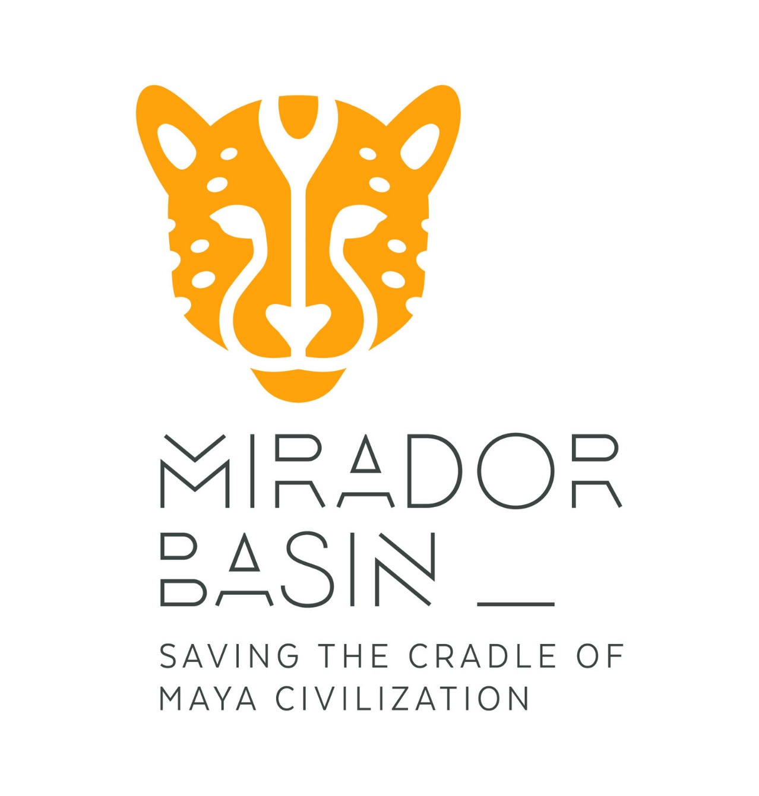
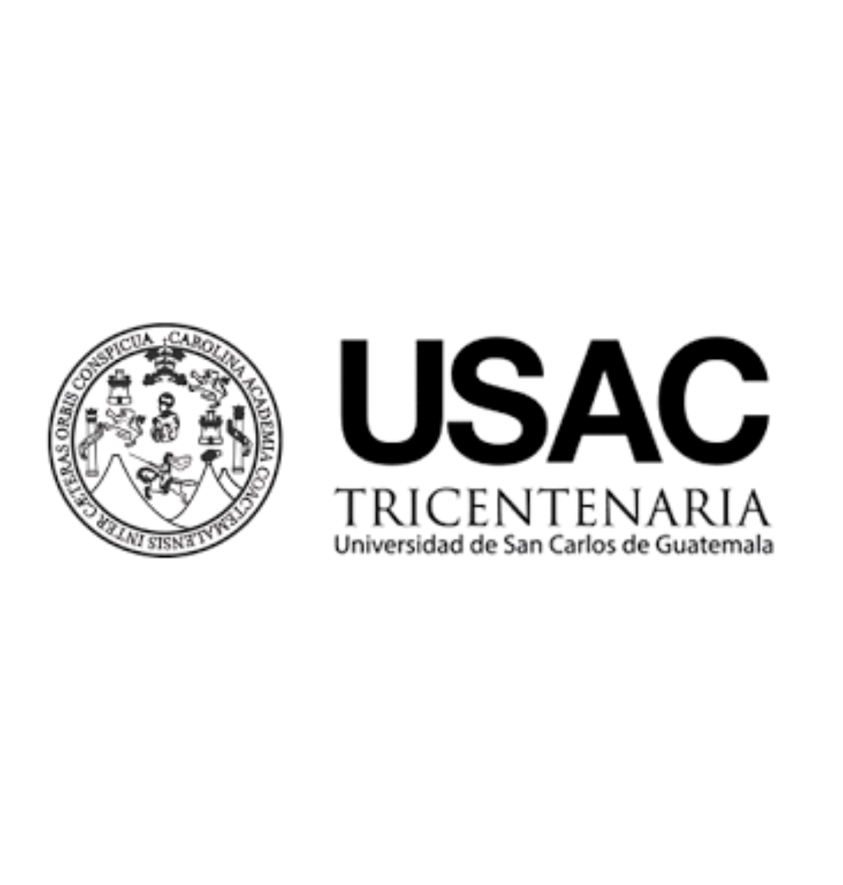

Una aproximación digital al patrimonio arqueológico de El Mirador, Petén, Guatemala. Explora tres modelos tridimensionales de figurillas mayas y descubre nuevas formas de observar sus detalles.
EL MIRADOR · PETÉN · GUATEMALA

LOGO 1

LOGO 2
LOGO 3
Rostros del Pasado
Grupo Trogon · Colección piloto
Catálogo digital
Selecciona una de las tres piezas para examinar su modelo tridimensional. Puedes girarlo, acercarlo y, desde un dispositivo compatible, visualizarlo en realidad aumentada.